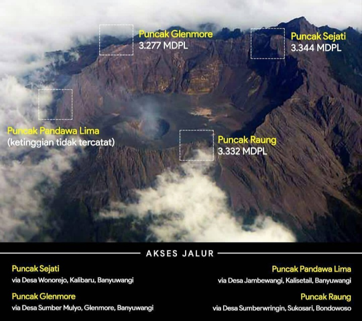

Jalur Gunung Raung
Puncak-Puncak Gunung Raung
Gunung Raung banyak di minati oleh pendaki. puncak yang sering di tuju adalah puncak sejati via Kalibaru, Banyuwangi. berikut rute pendakian yang akan dilewati :
- Basecamp Rumah Pak Soeto – Pos 1 Gareng
- Pos 1-Pos 2 Semar (4jam)
- Pos 2-Camp 3 1656 Mdpl (1jam)
- Camp 3-Camp 4 1855 Mdpl (2jam)
- Camp 4-Camp 5 2115 Mdpl (40menit)
- Camp 5-Camp 6/Pos 3 Petruk 2285 Mdpl (30menit)
- Camp 6-Camp 7 2541 Mdpl (45 menit)
- Camp 7-Camp 8 2876 Mdpl (2jam)
- Camp 8-Camp9/Pos 4 Bagong 3023 Mdpl (1jam)
- Camp 9-Puncak Bendera/ Puncak Kalibaru 3154 Mdpl (10menit)
- Puncak Bendera-Puncak17
- Puncak 17 -Puncak Tusuk Gigi
- Puncak Sejati Raung (8°07’32’’ LS dan 114°02’48 BT)
Fasilitas yang di dapat saat open trip
Jika peserta lebih dari 10 orang akan mendapat FREE T-SHIRT gunung raung.
Puncak Sejati Gunung Raung

Popular Post
Follow Me
IG : @rzky.frr